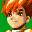
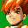
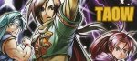
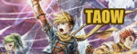

Seriously, I know the site has some scary things, but...
 This guy has issues, I swear.
I think they probably figured that out already anyway.
 I take it you are
seeking a means of escape from this hell?
I take it you are
seeking a means of escape from this hell?
 I wouldn't put it
like that.
I wouldn't put it
like that.
Seriously, I know the site has some scary things, but...
 Then run! Run while
you still can!
Then run! Run while
you still can! That's not quite the point of this page.
That's not quite the point of this page.
 This guy has issues,
I swear. Anyway,
since Alex is wrapped up in his delusions, I'll explain. This page is a list of
links to other Golden Sun sites.
Anyway,
since Alex is wrapped up in his delusions, I'll explain. This page is a list of
links to other Golden Sun sites.
I think they probably
figured that out already anyway.
Sites
Fanlistings
Linking to TAOW
If you want to link to The Adepts of Weyard, then you can use one of the buttons here.
 